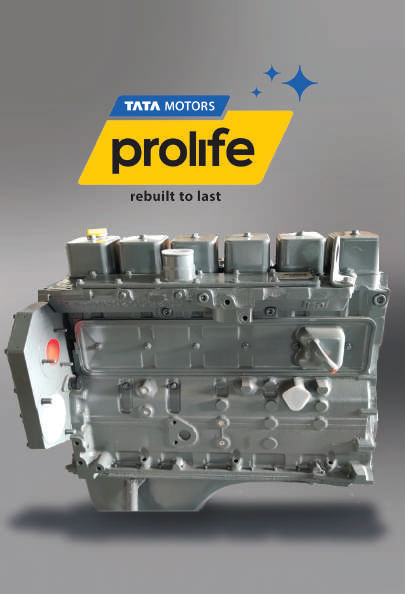
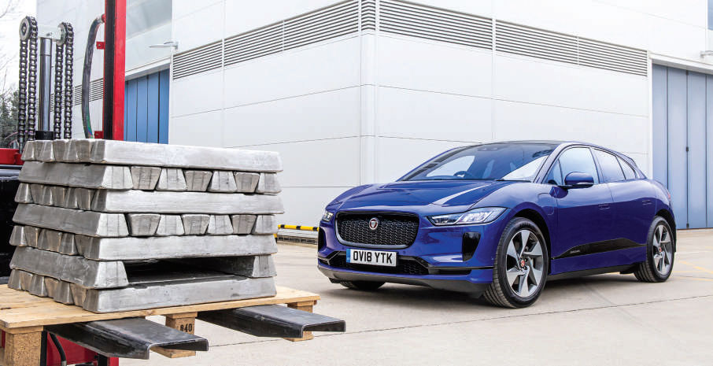

TATA MOTORS
ANNUAL REPORT
2019-2020
Environmental Responsibility
Circular economy and resource efficiency
Automobile manufacturing is a resource-intensive process and uses a variety of materials. The Tata Motors Group has undertaken several initiatives to capitalise on the opportunities provided by circular economy. Our Group companies have been closely associated with research and innovation in this space. The initiatives range from lifecycle analysis, innovation and alternate materials to recycling and reuse, among others.
Tata Motors Limited
TML in India has been working on the three major pillars of reduce, reuse and recycle to minimise waste and increase resource efficiency.
Apart from innovative initiatives to minimise waste generation, TML ensures that waste disposal and recycling practices are as per the applicable regulations, through authorised agencies.
Rethinking business for a circular economy
The Tata Prolife business division remanufactures auto components that have reached the end of their useful life. Aimed at CV owners, Tata Prolife extends the life of engine long blocks through systematic overhaul that leads to optimum performance while also adding to the life of the products.
In FY20, an equivalent of 33,615 engines were reused or recycled under TML's take-back programme. There has been a consistent increase in the number of equivalent engines remanufactured every year. A 5% improvement was observed in the reporting period over the previous year, resulting in revenue generation of ₹247 crore.
Remanufacturing of an engine not only has significant economic benefits, but also has great positive sustainability impact. Various resources, such as raw materials, energy and water, which are required for manufacturing a new engine are eliminated or significantly reduced.
The Tata Prolife business has also created new business and employment opportunities, thus bringing about positive social impact.
TOTAL MATERIAL SAVED DUE
TO RECYCLING AT PROLIFE
3,760.1 TONNES
GHG EMISSIONS AVOIDED DUE TO
REMANUFACTURING OF 6BT AND
ACE ENGINES AT PROLIFE
8,923.7 tCO2
Jaguar Land Rover
As an early adopter of circular economy principles, JLR has long recognised that 'take, make, waste' processes threaten the availability of natural resources and the materials upon which it depends. JLR aims to do more by closing the loop on precious materials, recycling and reusing waste and materials wherever it can. Investing in new environmentally friendly technologies and processes is a vital part of JLR’s business practice.
JLR's long-term goal is to partner with key innovators to support recycled material, while still maintaining high standards of safety and quality. JLR is working with the German chemical company, BASF, to pilot research around an innovative recycling process that will convert plastic waste into a new premium grade material that could feature in future vehicles.
SHARE OF RECYCLED CONTENT
IN JLR'S ALUMINIUM ALLOY
UP TO 75%
Giving aluminium a second life
Aluminium is a key component of JLR's manufacturing process and vehicle design. JLR's latest project, REALITY, builds on longstanding work, such as 2016’s REALCAR initiative, finding pioneering ways to recover aluminium from end-of-life vehicles to build next-gen models. REALITY aims to recover post-consumer aluminum from sources, including end-of-life vehicles, to reform it into a new high-grade aluminium to create new vehicles.
The process is currently being tested on early, pre-production Jaguar I-PACE prototypes that have had their batteries safely removed. These batteries enter into their own second-life process that JLR is developing, while the scrap from the vehicles is sorted into various materials using high-tech sensors by Axion Recycling. Once separated, the aluminium scrap could then be melted, their quality analysed, blended and reformed into a new aluminium alloy.
With this project, Jaguar Land Rover expects to reduce the CO2 impact of production while reducing the amount of virgin aluminium required to produce vehicles.
Between September 2013 and January 2019, around 3,20,000 tonnes of closed-loop scrap were processed back into the brand’s lightweight aluminium intensive architecture, across all vehicle lines, including the Jaguar XE.

- Corporate Overview
- Company Profile
- Chairman’s Message
- TML CEO and MD’s Message
- JLR CEO’s Message
- New Launches
- Key Highlights
- Performance Review
- Business Model
- Operating Environment
- Risks and Opportunities
- Stakeholder Engagement and Materiality
- Tata Motors Limited – Turnaround 2.0
- Jaguar Land Rover – Transformation
- Tata Motors Finance
- Sustainability Focus
- Environmental Responsibility
- Social Responsibility
- Corporate Governance